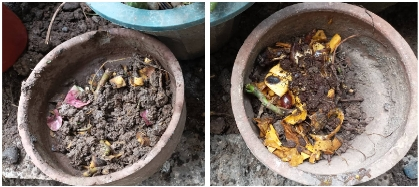

References
Ross, R. (2018, September 12). The science behind composting. LiveScience. Retrieved September 8, 2022, from https://www.livescience.com/63559-composting.html
Comparing the Effectivity of Hot and Cold compost methods
through the growth of Allium fistulosum (Spring onion)
Composting is valuable to communities as well as the environment as it encourages eco-friendly measures to counter waste pollution, specifically organic waste in the community, as well as promote organic fertilizer for the residents' plants. To further expound, Composting is the process of speeding up the natural decay of organic waste through putting together different types of organic materials such as plant waste (Leaves,Grass Clippings) , food waste (Fruits, Vegetables) and many more in order to cultivate an ideal area or space for different microorganisms to thrive which produces nutrient rich soil (Ross, 2018). In our project, we will be focusing on the 2 methods of composting: aerobic (Hot) and anaerobic (cold) composting methods, the difference between you turning and mixing the organic materials to generate heat in the former whilst not doing it in the latter. Now, communities are able to make use of composting in order to reduce the waste that it produces by recycling the organic waste through composting and instead produce nutrient rich soil that is beneficial for the plants and environment around the community which makes it valuable for improving waste management. This is why it is important to undertake and explore this research as it determines what method is the most efficient and effective way of composting and which produces better quality soil.
With composting, we're able to spread awareness of our message to help our environment be greener and cleaner to the Badjao community through giving them the knowledge and opportunity to grow their own plants through UCG and composting. By using biodegradable materials, they are able to use their waste as compost and uphold environmentally friendly practices without harming the environment around their community. The Badjao community are also able to grow their own resources, and with the results of the experiment, we are able to improve the method they use in composting and boost the yield of their plants through the nutrient rich soil that composting produces and through this, they will be able to ease their food and financial needs through consumption or retailing it.
Preparation of compost starting materials (1st and 3rd picture: Tea leaves separated from bags and left out to dry, 2nd picture: Assorted fruit and vegetable waste, 4rth picture: Preparation of soil in compost pots)
Pots filled with soil for the experiment, each column labeled A to C with the first being Column A, the second being Column B and the third being Column C using masking tape placed on the front of the pot (some are covered and can't be seen but are present). Whilst each row is labeled with a corresponding shape beside the letter for further identification: a triangle for the first row in the bottom, a square for the middle row and a circle for the top row.
Compost pots are seen below, with the one on the right being the anaerobic compost, whilst the one on the right is the aerobic compost.

Leader

Researcher/Data Gatherer
Assistant Leader

Secretary